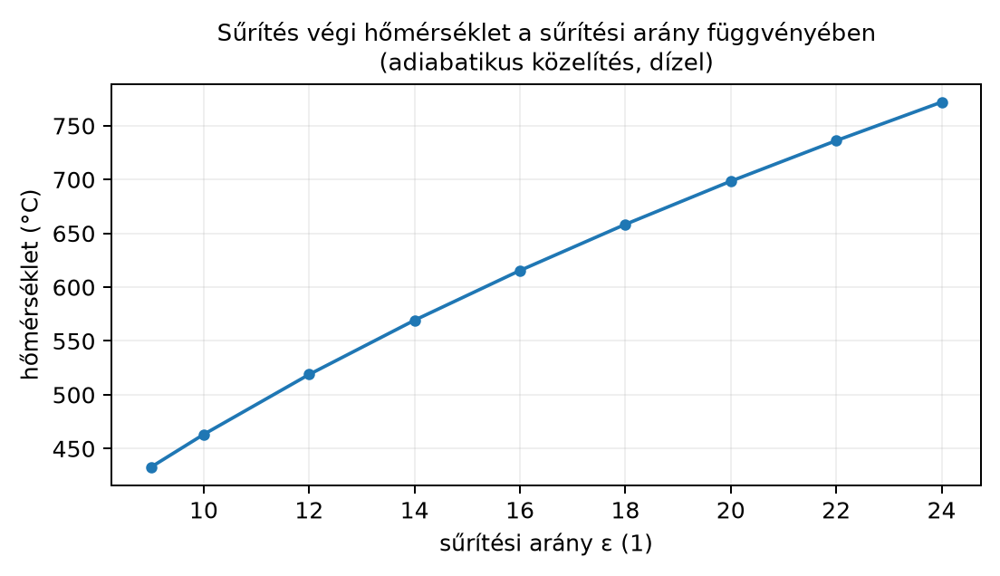

Egy hideg téli hajnalon a kisteherautó 2,0 literes dízelmotorja csak hosszas izzítás után, nagy fehér füstfelhővel indul, és percekig kopog. A műhelyben az ügyfél azt kérdezi: „Miért nem indul úgy, mint a benzines?” Ahhoz, hogy erre szakszerűen válaszoljunk, pontosan értenünk kell, mi történik a dízelmotor hengerében a szívás, a sűrítés, a befecskendezés és az égés során, és miért tér el ez alapvetően az Otto-motor működésétől.
A dízelmotor hengerében a szívási ütemben csak levegőt szívunk be, tüzelőanyagot nem. A dugattyú felfelé halad, a levegőt erősen összenyomja: a sűrítési arány jellemzően 15–24:1 közötti (ellenőrizendő: gyártói adatok). Az adiabatikus összenyomás miatt a levegő hőmérséklete kb. 600–770 °C-ra emelkedik. A felső holtpont közelében a porlasztó befecskendezi a gázolajat, amely a forró levegőben elpárolog, keveredik, majd magától meggyullad. Ezt a folyamatot szemlélteti a következő, idealizált számításból készült ábra.

Az ábrán jól látszik, hogy egy Otto-motorra jellemző 9–12:1 sűrítési arányhoz kb. 430–520 °C, a dízel 15–24:1 arányánál kb. 590–770 °C sűrítés végi hőmérséklet tartozik (idealizált adiabatikus számítás; a valóságban a hőveszteség miatt kevesebb, feltöltésnél több). Ez a nagy hőmérséklet-különbség teszi lehetővé az öngyulladást.
Definíció. A dízel-körfolyamat (ideális körfolyamat) egy olyan elméleti modell, amely a belső égésű, sűrítés utáni öngyulladással működő motorban lejátszódó állapotváltozásokat írja le. Négy szakaszból áll:
A valóságos négyütemű dízelmotor munkafolyamata négy ütemből áll:
Az indikátordiagram (p–V diagram) a henger nyomását a hengertérfogat függvényében mutatja. A dízelmotor indikátordiagramján a sűrítési görbe meredeken emelkedik, a felső holtpont környékén a nyomás gyorsan felugrik, majd az expanziós görbe lefut. A dízel égési nyomáscsúcsa a nagy sűrítési végnyomás miatt jóval nagyobb, mint az Otto-motoré (nagyságrendileg 150–200 bar a 60–120 bar-ral szemben; ellenőrizendő: motortípus szerint), ezért a hajtóművet erősebbre méretezik. A diagramon a befecskendezési és égési szakaszban a nyomásváltozás szélesebb, mint a benzinmotornál, mert az égés nem egyetlen pillanatban, hanem a befecskendezés alatt folyamatosan megy végbe.
Definíció. Öngyulladás a dízelmotorban az a folyamat, amikor a beszívott, erősen összesűrített forró levegőbe porlasztott tüzelőanyag külső gyújtószikra nélkül, a hőmérséklet hatására meggyullad.
Definíció. A cetánszám a gázolaj gyújthatóságát jellemző mérőszám: minél magasabb, annál könnyebben és rövidebb idő alatt gyullad meg a tüzelőanyag a forró levegőben. A jó gyulladási tulajdonság rövid gyújtási késedelmet és lágyabb égést eredményez. A Magyarországon forgalmazott dízelüzemanyag cetánszáma jellemzően legalább 51 (ellenőrizendő: az EN 590 szabvány szerinti aktuális előírás).
Definíció. A gyújtási késedelem a befecskendezés kezdetétől az észlelhető égés megindulásáig eltelt idő. Minél rövidebb a késedelem, annál kevesebb tüzelőanyag gyűlik össze a hengerben égés nélkül; a hosszú késedelem hirtelen, nagy nyomásemelkedést, úgynevezett dízelkopogást okoz.
Definíció. A minőségi szabályozás a dízelmotor terhelésszabályozásának elve: a motor teljesítményét a befecskendezett tüzelőanyag mennyiségével változtatjuk, miközben a beszívott levegő mennyiségét alapvetően nem fojtjuk. Így a keverék légviszonya a terheléstől függően széles tartományban változik; alapjáraton és kis terhelésen nagy levegőfelesleg (sovány keverék), teljes terhelésen kisebb levegőfelesleg alakul ki. Ezzel szemben az Otto-motorra jellemzően mennyiségi szabályozás érvényes, amelynél a fojtószelep állításával a beszívott keverék mennyiségét változtatjuk, és a légviszony közel állandó.
A dízelmotor alapvető szerkezeti eltérései az Otto-motorhoz képest:
A dízelmotor alkalmazási területei: személygépkocsik (elsősorban nagy futásteljesítményű flottajárművek), kisteherautók, haszongépjárművek, teherautók, autóbuszok, mezőgazdasági és építőipari munkagépek, hajómotorok, szükségáram-források és vasúti járművek. Előnye a jobb hatásfok, az alacsonyabb fajlagos fogyasztás és a nagy nyomaték alacsony fordulatszámon; hátránya a nagyobb tömeg, a magasabb károsanyag-kibocsátás kezelésének igénye és a zajosabb járás.
| Jellemző | Otto-motor (benzines) | Dízelmotor |
|---|---|---|
| Keverékképzés | Homogén keverék (karburátor/befecskendezés) | Heterogén, levegőfelesleges keverék |
| Gyújtás | Szikragyújtás (gyújtógyertya) | Öngyulladás sűrítés után |
| Sűrítési arány (példa) | 9–12:1 | 15–24:1 |
| Terhelésszabályozás | Mennyiségi (fojtószelep) | Minőségi (tüzelőanyag-mennyiség) |
| Legnagyobb fordulatszám (személyautó, példa) | kb. 6 000–7 000 1/min | kb. 4 500–5 000 1/min |
| Hatásfok (példa) | 25–35 % | 35–45 % |
| Fő emissziós kihívások | CO, HC, NOx | NOx, részecske |
Az értékek tanulási példák (ellenőrizendő: gyártói adat / hatályos előírás).
A dízelmotorban a tüzelőanyag és a levegő keveredése alapvetően kétféle égéstér-kialakítással valósulhat meg.
Közvetlen befecskendezésnél az injektor közvetlenül a henger fő égéstérbe porlasztja a gázolajat. A dugattyú tetején kiképzett égéstér-üreg (gyakran toroidális vagy ω-alakú) irányítja a levegőt, hogy a porlasztott tüzelőanyaggal minél jobban keveredjen. A befecskendezési nyomás magas: a modern közös nyomásterű rendszereknél 1500–2700 bar is lehet (ellenőrizendő: gyártói adat). Az égés a porlasztott cseppek felületén indul meg, és a befecskendezés ütemében fokozatosan halad előre. A közvetlen befecskendezés előnye a jobb hatásfok és az alacsonyabb fogyasztás; hátránya a zajosabb égés és a hidegindítási igény.
Közvetett befecskendezésnél a tüzelőanyagot egy kisebb segédégéstérbe (előkamra vagy örvénykamra) porlasztják be, amely a hengerfejben van kialakítva. Az égés az előkamrában kezdődik, majd a forró, részben elégett gázok egy szűk átömlőnyíláson át a fő égéstérbe áramlanak, ahol az égés befejeződik. Az előkamrában nagyobb a légörvény, ezért a keverékképzés már alacsonyabb befecskendezési nyomással (jellemzően 100–150 bar) is jó. A közvetett befecskendezésű motorok régi személyautó-dízelekben voltak elterjedtek. Előnyük a lágyabb, csendesebb égés és a kisebb befecskendezési nyomásigény; hátrányuk a nagyobb hőveszteség, ami nagyobb fogyasztást és rosszabb hidegindítást jelent – ezért az előkamrás motor izzítás nélkül hidegen gyakorlatilag nem indul.
A bal oldali metszeten (DI) a középen álló injektor közvetlenül a dugattyú ω-alakú üregébe porlaszt, az izzítógyertya az égéstér szélén ül. A jobb oldalon (IDI) az injektor és az izzítógyertya a hengerfejben kialakított előkamrába (örvénykamrába) nyúlik, amelyet szűk átömlőnyílás köt össze a fő égéstérrel. Szaggatott vonal jelöli a tüzelőanyag-sugarat, íves nyíl a légörvényt. A HTML-változat lépésenként mutatja a befecskendezést, a gyulladást és (IDI-nél) a láng kiáramlását a fő égéstérbe.
Adott: Egy közvetlen befecskendezésű dízelmotor sűrítési aránya , a szívási ütem végén a levegő hőmérséklete , a nyomása . A levegő adiabatikus kitevője .
Keresett: A sűrítés végi hőmérséklet és nyomás .
Képlet:
Behelyettesítés:
Eredmény: A sűrítés végén a levegő hőmérséklete körülbelül 658 °C, a nyomása körülbelül 57 bar. Ez a hőmérséklet már elegendő a gázolaj öngyulladásához. Ellenőrzés: a hőmérséklet Kelvinben 931 K, ami a várt 850–1000 K tartományba esik; a nyomás 57 bar reális a dízel sűrítés végi értékére.
Adott: Egy négyhengeres, 2,0 literes dízelmotor egy hengerének lökettérfogata . A beszívott levegő sűrűsége . A légviszony , a sztöchiometrikus levegő/tüzelőanyag arány dízelre (ellenőrizendő: tüzelőanyag-összetétel szerint).
Keresett: Az egy hengerbe beszívott levegő tömege és a ciklusonként befecskendezett tüzelőanyag tömege.
Képlet:
Behelyettesítés:
Eredmény: Egy henger egy munkaciklusában körülbelül 0,6 g levegő és 27,6 mg gázolaj vesz részt. Ellenőrzés: a befecskendezett mennyiség reális; teljes terhelésen (kisebb ) ez több, alapjáraton kevesebb lehet.
Hibás példa. Ha valaki a beszívott levegő tömegét a teljes motor lökettérfogatával (2,0 l) számolja, akkor négyszeres levegő- és tüzelőanyag-tömeget kapna. A hibás eredmény: lenne hengerenként, ami egy ciklusra túl nagy. A helyes számításnál mindig az egy henger lökettérfogatát kell használni, mert a befecskendezés hengerenként történik.
A dízelmotor működésének ellenőrzése során a következőket mérjük:
Egy 2,0 literes, közvetlen befecskendezésű dízel személyautó hideg időben nehezen indul, a kipufogóból fehér füst áramlik, és az első percekben erős kopogás hallható. A műhelyben a következő diagnosztikai lépéseket végezzük el:
1. feladat (A) Definiáld az öngyulladást és a cetánszámot!
2. feladat (A) Számítsd ki a sűrítés végi nyomást és hőmérsékletet, ha , , , !
3. feladat (B) Egy 2,2 literes, négyhengeres dízelmotor egy hengerének lökettérfogata 0,55 l. A beszívott levegő sűrűsége 1,15 kg/m³, a légviszony , . Mennyi a hengerenként befecskendezett tüzelőanyag-tömeg?
4. feladat (B) Magyarázd el, miért van szükség izzítógyertyára a közvetlen befecskendezésű dízelmotornál hideg időben, és miért volt az izzítás a közvetett befecskendezésű motoroknál nélkülözhetetlen, és miért elég a modern DI-motoroknál rövidebb izzítás!
5. feladat (C) Hasonlítsd össze a közvetlen és a közvetett befecskendezésű dízel égéstér előnyeit és hátrányait a hidegindítás, a zaj, a fogyasztás és a befecskendezési nyomás szempontjából! Foglald táblázatba!
6. feladat (D) Egy dízelmotor hidegindításkor nem indul, de az izzítórendszer működik, az akkumulátor rendben van. Kompresszióméréskor a hengerek értékei: 27 bar, 26 bar, 27,5 bar, 14 bar. Milyen hibát gyanítasz, milyen további méréseket végeznél, és mi a javítás menete? (A kompresszióértékek tanulási példák, ellenőrizendő: gyártói adat.)
1. feladat – megoldás
Öngyulladás: a tüzelőanyag külső gyújtószikra nélkül, a sűrítés során
felmelegedett levegőben magától meggyullad. Cetánszám: a gázolaj
gyújthatóságának mérőszáma; magasabb érték rövidebb gyújtási késedelmet
és könnyebb hidegindítást jelent.
2. feladat – megoldás
,
azaz kb. 621 °C.
.
Ellenőrzés: a nyomás a dízelre jellemző 45–60 bar tartományban van.
3. feladat – megoldás
.
4. feladat – megoldás
A közvetlen befecskendezésű dízelmotornál hidegben a sűrítés végi levegő
hőmérséklete ugyan magas, de a hideg hengerfal és a hideg beszívott
levegő miatt az égéstér falai sok hőt elvonhatnak; az izzítógyertya
helyi hőt ad a porlasztott tüzelőanyag környezetébe, elősegítve az
öngyulladást. A közvetett befecskendezésű (elő- és örvénykamrás)
motoroknál a nagy hőfelvevő felület és a szűk átömlőnyílás miatt hidegen
még több hő vész el, ezért ezeknél az izzítás nélkülözhetetlen (az
izzítógyertya az előkamrában ül, és nagyobb sűrítési arányt, kb. 20–24
értéket használnak – ellenőrizendő). A kisebb hőveszteségű közvetlen
befecskendezésű motor hidegen könnyebben indul, ezért a modern
DI-motoroknál rövidebb izzítás is elég.
5. feladat – megoldás
Példa táblázat:
| Szempont | Közvetlen befecskendezés (DI) | Közvetett befecskendezés (IDI) |
|---|---|---|
| Befecskendezési nyomás | Magas (modern rendszerek 1500–2700 bar) | Alacsonyabb (100–150 bar) |
| Hidegindítás | Hidegen könnyebben indul, rövid izzítás is elég | Nagyobb hőveszteség, izzítás nélkül hidegen nem indul |
| Zaj | Zajosabb égés | Lágyabb, csendesebb |
| Fogyasztás | Alacsonyabb (jobb hatásfok) | Magasabb (nagyobb hőveszteség) |
| Égéstér-kialakítás | Dugattyúüreg | Előkamra/örvénykamra a hengerfejben |
Az értékek tanulási példák (ellenőrizendő: gyártói adat).
6. feladat – megoldás
A negyedik henger sűrítési nyomása (14 bar) jelentősen elmarad a többi
hengertől (26–27,5 bar). Ez alacsony kompresszióra utal a 4. hengerben.
Továbbá: szelephézag-ellenőrzés, szivárgási teszt (sűrített levegővel)
annak eldöntésére, hogy a veszteség a szelepeknél vagy a
dugattyúgyűrűknél van-e; esetleg endoszkópos hengerfal-vizsgálat. A
javítás során a hengerfej leszerelése, szelepülékek és szelepek
ellenőrzése, illetve a dugattyúgyűrűk és a dugattyú cseréje. Az
újraépítés után kompresszióméréssel ellenőrizzük az egyenletességet,
majd hidegindítási próbát végzünk.
A dízelmotor a sűrítés végén elért 600–770 °C levegőhőmérséklet segítségével, külső gyújtószikra nélkül gyújtja meg a porlasztott gázolajat. A sűrítési arány 15–24:1, ami nagyobb az Otto-motorénál; ez jobb termikus hatásfokot, de nagyobb mechanikai terhelést is jelent. A dízelmotor terhelését minőségi szabályozással, a befecskendezett tüzelőanyag mennyiségével állítjuk. A cetánszám a gyújthatóságot, a gyújtási késedelem az égésindítás időbeli késését jellemzi. Továbbvitt eredmény. A dízelmotor működésének és keverékképzésének alapjait használjuk a(z) A dízel tüzelőanyag-rendszer kisnyomású oldala és a hagyományos adagolók alfejezetben, ahol a tüzelőanyag-ellátó rendszert, valamint a(z) A kipufogógáz összetétele, motoroldali kibocsátáscsökkentés és kipufogógáz-visszavezetés alfejezetben, ahol a dízel égésből származó károsanyagok képződését tárgyaljuk. A gyakorlatban mindig a gyártói adatokat kell ellenőrizni: sűrítési arány, befecskendezési nyomás, kompressziós határérték és izzítási idő. Nyomás alatt álló dízel befecskendező rendszert tilos megbontani.
Forrástípusok: gyártói javítási utasítások és műhelykézikönyvek; motorszerkezettani és motortechnikai szakkönyvek; az MSZT szabványai (pl. tüzelőanyagokra vonatkozó EN 590); az ENSZ-EGB vonatkozó előírásai a motorok kibocsátására vonatkozóan.
Ellenőrizendő állítások listája: a sűrítési arány tartomány (15–24:1) és a sűrítés végi nyomások/hőmérsékletek; a befecskendezési nyomások (100–150 bar nyitónyomás előkamrás motoron, 1500–2700 bar közös nyomásterű rendszeren, a mechanikus DI-rendszerek csúcsnyomása); a cetánszám minimális értéke (EN 590); a kompressziós példaértékek (25–35 bar, 30–40 bar, 10 % eltérés); a légviszony és a sztöchiometrikus levegő/tüzelőanyag arány (, ); a hatásfok-tartományok (25–45 %). Minden gyártói vagy szabvány szerinti értéket a javítás előtt a gyártói dokumentációból kell megerősíteni.